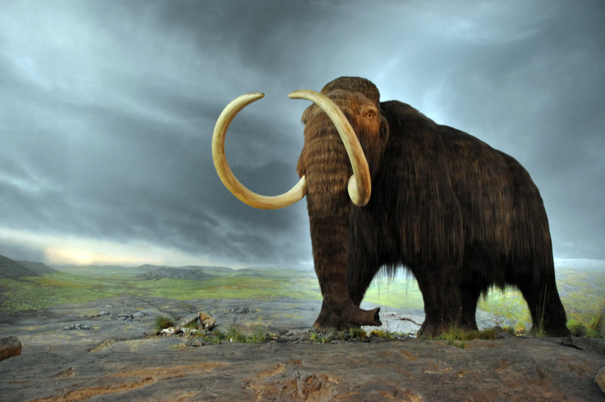

Mamute

O Mamute é um animal extinto que pertenceu ao gênero Mammuthus e à família Elephantidae incluída nos proboscídeos.
Tal como os elefantes, estes animais apresentavam tromba e presas de marfim encurvadas, que podiam atingir cinco metros de comprimento, mas tinham o corpo coberto de pelo.
Fonte:https://pt.wikipedia.org/wiki/Mamute
Aluno: Samantha Syndel Cordeiro